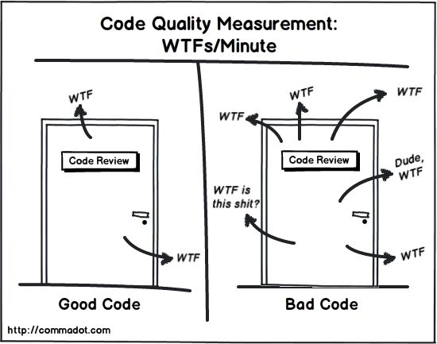
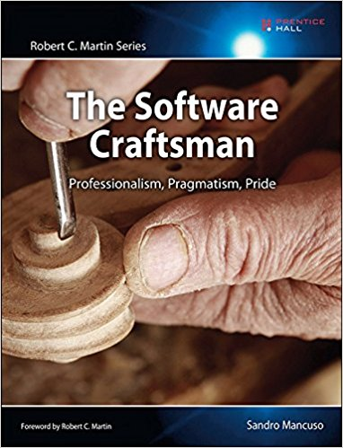
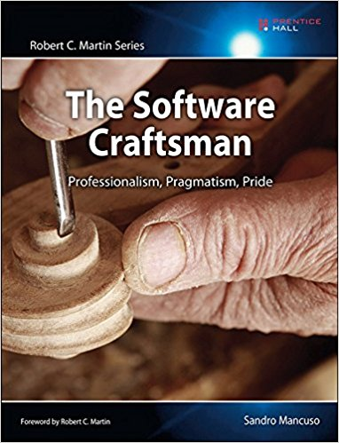

Clean Code
Make your code readable like a book
Created by Bernhard Kern / @BernhardKern, it-economics GmbH
Sources
- https://de.slideshare.net/arturoherrero/clean-code-8036914
- Clean Code - Robert C. Martin
- The Sotware Craftsman - Sandro Mancuso
the only valid metric for clean code
What is Clean Code?
... a (very) brief introduction
What is Clean Code - Ward Cunningham
What is Clean Code - Micheal Feathers
Why Clean Code?
Why clean code - Uncle Bob
Why clean code - Developers Perspective
- You are a developer
- You want to get a better developer
- (Other minor reasons)
- Produce tested, running , maintainable code
- Be important to your employer or customer
- Choose your employer or customer
- Change architecture: Bottom up
Why clean code - Employers Perspective
- It is (almost) free
- It is a key success factor to your software projects
- Reduces technical debt without costs
- Attract better and passionate developers
Why clean code - Bug fix costs

How can I learn Clean Code?
 

www.cleancodedeveloper.de - Sorry guys, just german
CCD Intiative is splitted into:
- Pricinples
- Practices
Clean Code Practices - some examples
- Boyscout rule - leave it cleaner as it was before
- Visit Meetups and Fares
- Pair Programming
- Use refactoring patterns
- Reflect Daily
- Write automated tests
Lets start with some advices and principles
- advices: tipps from the book or me
- principles: from CCD (which is derived from the book)
Principles - KISS and YAGNI
KISS
: Keep it simple and stupid
YAGNI
: You ain´t gonna need it
- Be careful: Developer: "We write that, just in case we need it"
- Be careful: Developer: "We will need this in future"
- Be careful: Product owner: "In future, this will happen"
Advice - Meaningful names
public List getThem() {
List list1 = new ArrayList();
for (int[] x : theList)
if (x[0] == 4)
list1.add(x);
return list1;
}
Advice - Meaningful names
public List<Cell> getFlaggedCells() {
List<Cell> flaggedCells = new ArrayList| ();
for (Cell cell : gameBoard)
if (cell.isFlagged())
flaggedCells.add(cell);
return flaggedCells;
}
| Advice - Meaningful names - Shorter
public List<Cell> getFlaggedCells() {
return board.getCells().stream().filter(Cell::isFlagged).collect(toList());
}
Priciniple of Least astonishment
public String getDeviceName() {
if(name.equals("Jessica Jones")) {
setName("Lucas Cage"); //WTF
callDatabase(name); //WTF
}
return name;
}
Advice - Avoid noise comments
/** The day of the month. */
private int dayOfMonth;
/**
* Returns the day of the month.
* @return the day of the month.
*/
public int getDayOfMonth() {
return dayOfMonth;
}
Advice - Avoid scary noise
/**
* The name.
*/
private String name;
/**
* The version.
*/
private String version;
/**
* The licenceName.
*/
private String licenceName;
Principle - DRY
DRY - Don´t repeat yourself is the oposite of WET priciple
private List<Person> createCdsTeam() {
List<Person> cdsTeam = new ArrayList<>();
Person timo = new Person();
timo.setFirstName("Timo");
timo.setLastName("Krauss");
cdsTeam.add(timo);
Person yunus = new Person();
yunus.setFirstName("Yunus");
yunus.setLastName("Durmus");
cdsTeam.add(yunus);
return cdsTeam;
}
Principle - DRY
private List<Person> createCDS() {
List<Person> cdsTeam = new ArrayList<>();
cdsTeam.add(createPerson("Vanessa", "Krapp"));
cdsTeam.add(createPerson("Timo", "Krauss"));
cdsTeam.add(createPerson("Yunus", "Durmus"));
cdsTeam.add(createPerson("Stephan", "Kämper"));
cdsTeam.add(createPerson("Bernhard", "Kern"));
return cds;
}
Advice - Write short classes and functions
- Classes : <= 100 lines
- Methods : <= 5 lines
Advice - The best function has no parameters
- Number of function parameters: <= 3
- Best number of function parameters: = 0
List<ReadingEntity> findAggregateByOwnerAndDeviceAndTime(
String database,
String measurement,
String field,
String owner,
String device,
String reading,
long start,
long stop,
long interval,
DurationUnitType intervalUnit,
FunctionType function,
String shift,
String fill);
Advice - Function The best function has no parameters
List<ReadingEntity> findReadings(
Interval interval,
ReadingQueryParameter queryParameter);
Principle - SRP
SRP = Single Resposibility Priciple / (Do one thing, but do it well)
class Book {
public String getTitle() {
return "A Great Book";
}
public void saveBook(BookRepository repository) {
repository.save(this);
}
}
if(## check something here) { // Level 1
Person stephan = new Person(); // Level 2
stephan.setFirstName("Stephan"); // Level 2
stephan.setLastname("Kämper"); // Level 2
person = stephan;
} else { // Level 1
Person bernhard = new Person(); // Level 2
bernhard.setFirstName("Bernhard"); // Level 2
bernhard.setLastname("Kern"); // Level 2
person = bernhard;
}
TIPP: Use methods or relations to services to jump between abstraction Levels TIPP: With "extract method" or "extract class" refactoring you can easily solve SLA problems
Principle - SLA - Single level of abstraction
// contains duplication
if(## check something here) { // conditional level
person = createPerson("Stephan", "Kämper"); // -> do something
} else { // conditional level
person = createPerson("Bernhard", "Kern"); // -> do something
}
// version with DRY and SLA combined - no duplication, but is it really nicer?
if(## check something here) {
firstName = "Stephan";
lastName = "Kämper";
} else {
firstName = "Bernhard";
lastName = "Kern";
}
person = createPerson(firstName, lastName);
Summary
- Not tested code is legacy
- Deleting code is positive
- Commenting code is 90% unncessary
- Share coding conventions in your team
- Know shortcuts of Refactorings (Extract method, parameter, variable)
- Know your language and tools - Java 8 features, IDE shortcuts
- Some
Principles and Practices
- Boyscout rule - Leave the code cleaner as you found it before
- KISS and YAGNI - Keep it simple/stupid, You ain´t gonna need it
- DRY - Don´t repeat yourself (Some exceptions)
- SRP - Single resposibility priciple
- SLA - Single level of abstraction
Contact
it-economics GmbH
phone: 0151 40605032
xing: BernhardKern9
twitter: @BernhardKern
mail: bkern@it-economics.de